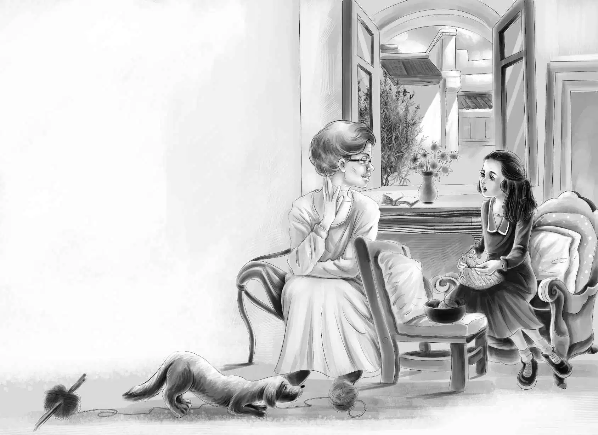

The Boss
“天哪，快看那辆车！”班尼看着窗外喊道。一辆黄黑相间、车身矮长的车停在外面，有人从车上下来，守卫迎上去，询问了几句，然后点点头，那人便径直来到了后门。
亨利打开房门，来客说：“是詹姆斯·奥登先生派我来看望他姐姐的。”
“快请进吧，”亨利说，“这位就是我的姑婆。”
客人微笑着向简姑婆打了个招呼：“詹姆斯·奥登先生是我最好的朋友。”
“请坐，”简姑婆亲切地说，“咱们似乎把客人都迎接到厨房来了，改天一定要开大门迎客！”
“厨房里顶好呢！”那人笑着说，“我叫加德纳，是专门负责采矿的。您弟弟派我来负责您的铀矿。”
班尼问：“您是统管一切的头儿吗？”
“可以这么说。”加德纳答道。
“那能让我们看你们挖矿吗？”班尼又问。
“当然可以！你们的地里已经有人在挖了，想去看看吗？”
“当然愿意！”亨利马上应道。
大家立刻前往铀矿地。
“看到山上的那块白色区域了吗？洞坑就在那儿。”加德纳先生说。
大家走近山洞，只见门口有两个守卫，洞内则站着两个手持长棍的人。
“长棍子就是盖革计数器！”班尼喊道。
“没错！”加德纳先生说。
工人们听到了动静，纷纷抬头张望，当看见是加德纳先生时，一个工人立刻从洞里走出，迎了上来。
“这里一切顺利，先生，”他说，“想听听计数器的声音吗？”
加德纳经理听了听：“好响！让孩子们听听，他们才是矿主呢！”
班尼兴奋得差点儿掉进洞里。
“好清脆的声音啊！”他说。
“这里一定有很多铀矿。”亨利倾听着盖革计数器发出的砰砰声。
孩子们回到家时，简姑婆正坐在前屋的窗户边。
“玩得尽兴吗？”她问孩子们。
“高兴极啦！”班尼说，“我们听到盖革计数器发出了好大的声音，这说明那里有铀矿，简姑婆。”
“是吗？真是个好消息。”她看起来非常开心。
吃完晚饭，孩子们将维莉留下陪姑婆。维莉边做针线活边和姑婆聊天。
“简姑婆，”她轻声问道，“我真不明白，您过去缺钱的时候，为什么不让爷爷帮您呢？”
“我来告诉你整件事的来龙去脉吧！”简姑婆说，“当初，我父母要搬到东部去住。那时候，你爷爷血气方刚，他居然想卖掉农场，做磨坊生意。”
“我有点儿理解了。”维莉轻轻地说。
“你能理解就太好了！”简姑婆说，“当初正是由于我喜欢农场，才坚持留了下来。可是我并不懂经营，也不知道该怎么做。农场从最初的20个雇工，到后来一一被遣散，最后只剩下了山姆，连牛和马都被我卖掉了。”
简姑婆顿了顿，继续说道：“在这种情况下，我怎么能跟你爷爷要钱呢？他从来都不同意我待在这里，我也绝不肯服软和认输。”
“简姑婆，您能告诉我这一切真好！现在让我扶您上床去睡觉吧！”
接连几个星期，奥登家的农场上一片繁忙景象。矿坑挖好了，大型机械从早轰鸣到晚。工人住的房子也盖起来了，镇上还新开了几家商店。火车车次不仅没有被取消，反而每天增开了四列火车，车站楼上多了两个接电话的女孩，整天忙着应付各种各样的来电。一天，简姑婆宣布了一个出人意料的计划。
“我要举行一个大型派对！”她说。
“派对？”亨利问道，“什么时候举行？”

“下个星期是我的生日，我想办个生日派对。”
“有谁会自己给自己办生日派对啊？”亨利说，“还是我们来给您张罗吧！”
“不要，”简姑婆说，“这是我的派对。如果你们的爷爷愿意，我也想让他过来！”
维莉说：“我太开心啦，简姑婆！我敢保证，他一定愿意来。”
孩子们的愿望终于实现了。
“快给他打电话！”班尼喊道。
简姑婆红着脸拨通了她弟弟的电话。
“詹姆斯，你好！”她干脆利落地说，“我想让你来参加我的生日聚会。”
“呃——呵！”爷爷显然吃了一惊。孩子们能听到他那深沉的嗓音。
“你想让我去，我当然愿意。我还要送一件礼物给你呢！”
“别带礼物，只管来，只要原谅我的过去就行。”
孩子们知道，爷爷现在一定语塞了。
“这个……这个……”他说，“你没什么事情需要我原谅啊！”
“谢谢你，詹姆斯。”简姑婆说。
简姑婆生日的前一天，加德纳先生带着孩子们去火车站接爷爷。
孩子们一见到奥登先生，便兴奋雀跃地欢呼起来，抢着扑上去帮他拎包。汤姆·杨站在车站门口，微笑地看着这一切。
“他在孩子们心目中地位多重啊。”汤姆喃喃道。
孩子们挤进加德纳先生的车里，和爷爷一起回到了农场。
大家进门的时候，简姑婆正端坐在前厅。她和弟弟握了握手。
“詹姆斯，你能来，实在是太好了。”她说。
“我也很高兴能见到你。”爷爷说，“我都快忘了，原来你这么漂亮。”
确实如此！孩子们仔细看了看姑婆，发现她真的很漂亮，蓝色的眼睛非常明亮。
奥登先生说：“我想单独跟亨利说会儿话。”
亨利和爷爷去了后屋。不一会儿，爷爷独自回来了，紧接着，孩子们听到亨利开着加德纳先生的车出了院子。大家十分诧异。
“亨利要去哪儿？”简姑婆问。
“这是个秘密。”奥登先生笑着回答。
亨利很快就回来了。他朝爷爷点了点头：“都办好了。”
“什么办好了？”杰西困惑地想，“难道要等到明天才能揭晓谜底吗？”
晚饭后，爷爷问道：“简，我有个计划，你想听听吗？”
“当然可以，”简姑婆说，“应该是个不错的计划！我过去可从来不愿听你说些什么。”
“那时候是我太专横了，”奥登先生说，“现在不会了。”他笑了起来。
“简，我的孙子孙女都很喜欢你的农场，”他说，“可是他们不能整个冬天都待在这里。”
“嗯，我知道，詹姆斯。”姑婆伤感地说。
“他们想把这座房子的另一半装修一下，让山姆和他妻子搬过来住。我们再在你的卧室和隔壁屋子之间开一扇门，让麦琪住在隔壁，方便照料你。这样你就可以安稳地度过整个冬天了。”
“谢谢你为我考虑得这么周到。”简姑婆柔声笑道。
“这些都是孩子们的主意。”奥登先生说，“他们还想装修一下楼上的房间给自己住。”
“当然可以。”简姑婆说。
“对了，还有一件事。”奥登先生看了看杰西，眨了眨眼睛。
“我听说了你的那个神秘人。”他说。
“神秘人不是我的。”杰西赶紧笑着辩解，“他人很好，是吧？”
“他已经不再是神秘人了，”维莉说，“好想能再看到他。”
奥登先生说：“只要你们邀请，他明天就可以来参加派对。”
“太好了，”简姑婆说，“我不介意聚会的时候来个神秘人。”
“他要飞过来吗？”杰西问。
“不，他已经在这里了，”爷爷说，“我下火车的时候他也跟着一起下了。”
“可是我们并没有看到他。”班尼满脸困惑。
“看来他还是神龙见首不见尾，对吧？”维莉笑道。